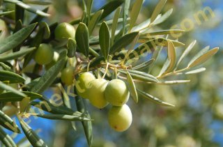

Dereotu
Akdeniz kıyılarında yetişir. Fransızlar ve İtalyanlar bu otu çok sever. Çerez olarak tek başına yer, salataya, türlülere, güveçlere katarlar. Yemeklere hoş bir lezzet ve koku verir.
Ülkemizde dereotu, genellikle bakla, kabak, enginar yemeklerinde, balık haşlamalarında, pilakilerde kullanılır. Dereotunu çiğ olarak ise, cacık, kabak ve baklanın yoğurduna doğrarız. Bu otun çiğ olarak yenmesinde daha büyük yarar vardır. Pişince yapısında bulunan madensel tuzlar ve vitaminlerin miktarı azalır.
Yararları:
Gaz atar, halk diliyle, yellendirir. Bu özelliği nedeniyle Fransız yazan Rebelais bu otla alay eder. Ama aslında gaz çıkartıcı yanı yergiye değil övgüye değer bir meziyettir.
Damarları açar, kan dolaşımını kolaylaştırır.
Aybaşını düzenler, kadınlara döl bereketi verir.
Bağırsakları yumuşatır, idrar söktürür.
Mideye rahatlık verir.
Hamile Kadınlar Yememelidir:
Dereotu çocuk düşürücü olarak ün yapmıştır. Eskiden, çocuk düşürmek için kullanılan kocakarı ilaçlarının çoğu dereotuyla hazırlanırdı. Günümüz çağdaş tıbca da bu özelliği doğrulanıyor.
Süt Yapar:
Çocuk düşüren dereotu, öte yandan emzikli anneye de çok yararlıdır. Süt yapar.

Zeytin
Ramazan manileri zeytine övgülerle doludur: "Sözümüz yoktur zeytuna / Her tanesi değer cana / Alası Girit zeytunu / Yemeyen benzer mecnuna."
Bir başka manide ise Girit zeytini öğülür: "Hoştur Tiriyye zeytunu / Alem olmuştur meftunu / İftarın baş yemeğidir / Yiyenler bilir tadını."
"Zeytin, ekmek" sözü de dilimizde yaygındır.
Besleyicidir:
Başta fosfor ve kükürt olmak üzere, içinde pek çeşitli madensel tuzlar, A ve C vitaminleri, azotlu ve yağlı maddeler ve karoten bulunan zeytin çok besleyicidir. Organizmanın madensel tuz ihtiyacını karşılar. Erkeğe güç ve enerji verir, yapısındaki kükürt ve karoten nedeniyle kadın cildini güzelleştirir, ona parlak ve canlı bir görünüm kazandırır. Şeker hastalan da korkmadan, diledikleri kadar zeytin yiyebilir, zira zeytin şeker hastalığına karşı en iyi doğal ilaçlardandır.
Bedeni mikrop ve virüslere karşı korur:
Zeytinde bol miktarda C vitamini vardır. C vitamini ise, özellikle, soğuk algınlıklarına, virüslerle bulaşan grip ve nezle gibi hastalıklara karşı organizmayı korur ve onun direncini artırır.
Gözleri güçlendirir:
İçinde A vitamini bulunduğundan, zeytin gözleri güçlendirir. Zeytin yağı halk arasında bir çok göz hastalıklarına karşı ilaç olarak kullanılır.
Karaciğerin dostudur:
Zeytin, karaciğerin dostudur. Bol bol zeytin yiyenler, tehlikeli bir hastalık olan sarılığa yakalanmazlar. Bu değerli besin, aynı zamanda böbreklerdeki kum ve küçük taşlan da eritir.